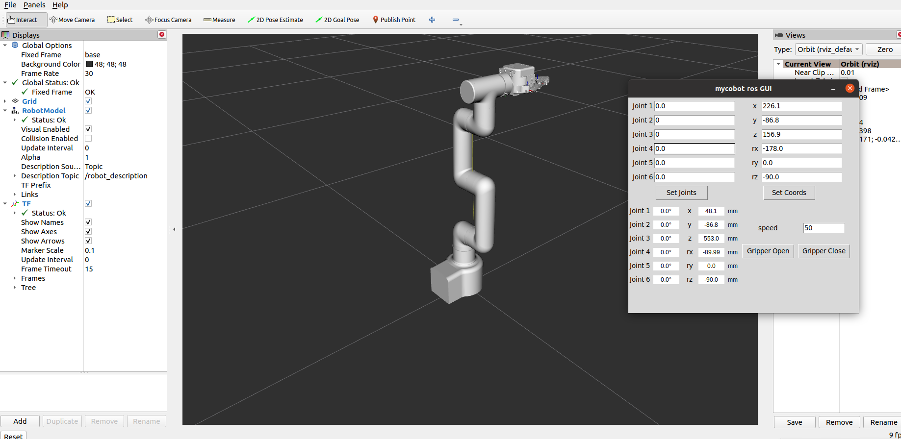
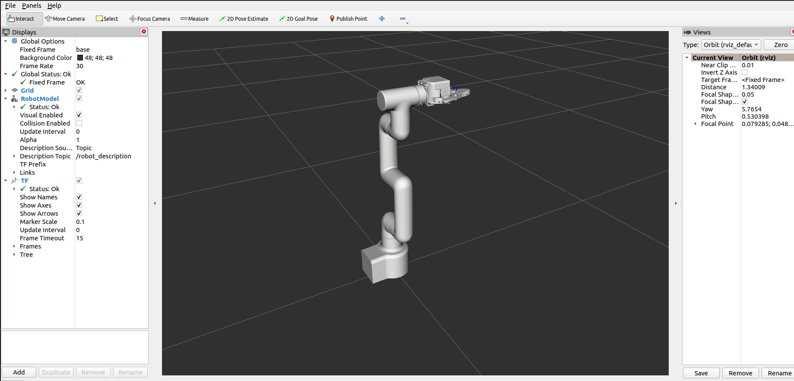

Controlling the Robotic Arm
Note: The pymycobot driver library version must be greater than 4.0.0. Moveit2 only supports the ROS2 Humble version. Please use the code from the corresponding branch.
Pre-use Preparation
Before using the sample functions, please ensure that the following hardware and environment are complete:
Hardware
- MyCobot Pro 450 robot arm
- Network cable (for connecting the robot arm to the computer)
- Power adapter
- Emergency stop switch (for safe operation)
Software and Environment
- Python 3.6 or later installed
- The
pymycobotlibrary installed (using thepip install pymycobotterminal command) - Ensure that the MyCobot Pro 450 is properly powered on and in standby mode.
- Note: The Pro 450 server automatically starts upon powering on; no manual operation is required.
Network Configuration
- MyCobot Pro 450 default IP address:
192.168.0.232 - Default port number:
4500 - Note: PC The local network card IP address must be set to the same network segment as the robot (e.g., 192.168.0.xxx, where xxx is a number between 2 and 254 and must not conflict with the robot).
Example:
- Robot IP: 192.168.0.232
- PC IP: 192.168.0.100
- Subnet mask: 255.255.255.0
Verification: After completing the network configuration, execute the following command on the PC terminal. If data packets are successfully returned, the network connection is normal:
ping 192.168.0.232
- MyCobot Pro 450 default IP address:
1 Slider Control
Open a command line and run:
# The default IP address of the Pro450 is "192.168.0.232" and the port number is 4500.
ros2 launch mycobot_pro_450 slider_control.launch.py
# If the end-user is equipped with a myGripper F100 force-controlled gripper, run:
ros2 launch mycobot_pro_450 slider_control_force_gripper.launch.py
This will open rviz2 and a slider component, and you will see something like the following:

If the end-user is equipped with a myGripper F100 force-controlled gripper, you will see the following interface:

You can then control the model's movement in rviz2 by dragging the slider. The real mycobot will also move accordingly.
Note: Since the robot arm will move to the model's current position as you enter commands, please ensure that the model in rviz does not clip before using these commands.
Avoid dragging the slider quickly after connecting the robot arm to prevent damage to the arm.
2 Model Following
In addition to the above controls, we can also make the model follow the movements of the real robot arm.
Open a command line and run:
# The default IP address of the Pro450 is "192.168.0.232" and the port number is 4500.
ros2 launch mycobot_pro_450 mycobot_follow.launch.py
After running successfully, all joints of the robot arm are released. It will also open rviz to display the model following effect. Now, drag the real robot arm joints, and the simulation model will follow the real robot arm's movements.

After running successfully, you need to simultaneously hold down the button at the end of the machine to drag the joint. The terminal output is as follows:
[INFO] [launch]: Default logging verbosity is set to INFO
[INFO] [robot_state_publisher-1]: process started with pid [12048]
[INFO] [follow_display-2]: process started with pid [12050]
[INFO] [rviz2-3]: process started with pid [12052]
[robot_state_publisher-1] Parsing robot urdf xml string.
[robot_state_publisher-1] Link link1 had 1 children
[robot_state_publisher-1] Link link2 had 1 children
[robot_state_publisher-1] Link link3 had 1 children
[robot_state_publisher-1] Link link4 had 1 children
[robot_state_publisher-1] Link link5 had 1 children
[robot_state_publisher-1] Link link6 had 0 children
[robot_state_publisher-1] [INFO] [1757408024.256520696] [robot_state_publisher]: got segment base
[robot_state_publisher-1] [INFO] [1757408024.256679159] [robot_state_publisher]: got segment link1
[robot_state_publisher-1] [INFO] [1757408024.256692374] [robot_state_publisher]: got segment link2
[robot_state_publisher-1] [INFO] [1757408024.256697373] [robot_state_publisher]: got segment link3
[robot_state_publisher-1] [INFO] [1757408024.256701681] [robot_state_publisher]: got segment link4
[robot_state_publisher-1] [INFO] [1757408024.256705999] [robot_state_publisher]: got segment link5
[robot_state_publisher-1] [INFO] [1757408024.256710327] [robot_state_publisher]: got segment link6
[rviz2-3] [INFO] [1757408024.565241287] [rviz2]: Stereo is NOT SUPPORTED
[rviz2-3] [INFO] [1757408024.565493504] [rviz2]: OpenGl version: 3.1 (GLSL 1.4)
[rviz2-3] [INFO] [1757408024.647227371] [rviz2]: Stereo is NOT SUPPORTED
[follow_display-2] [INFO] [1757408024.783281010] [follow_display]: ip:192.168.0.232, port:4500
[rviz2-3] Parsing robot urdf xml string.
[follow_display-2] [INFO] [1757408024.905252117] [follow_display]: Please press the button at the end of the machine to drag the joint.
[follow_display-2] [INFO] [1757408024.905252117] [follow_display]:请按下机器末端按钮进行关节拖拽运动
[follow_display-2] [INFO] [1757408024.937815658] [follow_display]: Publishing ...
3 GUI Control
Building on the previous functionality, this package also provides a simple graphical user interface. This approach requires that the actual robotic arm be connected to each other; please connect to mycobot.
Open a command line:
# The default IP address of the Pro450 is "192.168.0.232" and the port number is 4500.
ros2 launch mycobot_pro_450 simple_gui.launch.py
# If the end-device is equipped with a myGripper F100 force-controlled gripper, run:
ros2 launch mycobot_pro_450 simple_gui_force_gripper.launch.py

If the end-device is equipped with a myGripper F100 force-controlled gripper, you will see the following interface:

After successful execution, the terminal output is as follows:
[INFO] [launch]: Default logging verbosity is set to INFO
[INFO] [robot_state_publisher-1]: process started with pid [17196]
[INFO] [rviz2-2]: process started with pid [17198]
[INFO] [listen_real_service-3]: process started with pid [17200]
[INFO] [simple_gui-4]: process started with pid [17202]
[robot_state_publisher-1] Parsing robot urdf xml string.
[robot_state_publisher-1] Link link1 had 1 children
[robot_state_publisher-1] Link link2 had 1 children
[robot_state_publisher-1] Link link3 had 1 children
[robot_state_publisher-1] Link link4 had 1 children
[robot_state_publisher-1] Link link5 had 1 children
[robot_state_publisher-1] Link link6 had 0 children
[robot_state_publisher-1] [INFO] [1757414162.529535554] [robot_state_publisher]: got segment base
[robot_state_publisher-1] [INFO] [1757414162.530006477] [robot_state_publisher]: got segment link1
[robot_state_publisher-1] [INFO] [1757414162.530445098] [robot_state_publisher]: got segment link2
[robot_state_publisher-1] [INFO] [1757414162.530788098] [robot_state_publisher]: got segment link3
[robot_state_publisher-1] [INFO] [1757414162.531159021] [robot_state_publisher]: got segment link4
[robot_state_publisher-1] [INFO] [1757414162.531476222] [robot_state_publisher]: got segment link5
[robot_state_publisher-1] [INFO] [1757414162.531788353] [robot_state_publisher]: got segment link6
[listen_real_service-3] [INFO] [1757414163.139592125] [listen_real_service]: ip:192.168.0.232, port:4500
[rviz2-2] [INFO] [1757414163.306409248] [rviz2]: Stereo is NOT SUPPORTED
[rviz2-2] [INFO] [1757414163.306709577] [rviz2]: OpenGl version: 3.1 (GLSL 1.4)
[rviz2-2] [INFO] [1757414163.372621603] [rviz2]: Stereo is NOT SUPPORTED
[rviz2-2] Parsing robot urdf xml string.
Then, enter the relevant angles and coordinates in the GUI and click the corresponding buttons to synchronize the motion of the real machine with the simulation model.
Note: Before using the gripper switch button, ensure that the adaptive gripper is connected to the end-of-arm robot.
4 Keyboard Control
Keyboard control functionality has been added to the mycobot_pro_450 package, and is synchronized in real time within rviz2. This functionality relies on the Python API, so ensure that it is connected to the real robot arm.
Open a command line and run:
# The default IP address of the Pro450 is "192.168.0.232" and the port number is 4500.
ros2 launch mycobot_pro_450 teleop_keyboard.launch.py
# If the end-device is equipped with a myGripper F100 force-controlled gripper, run:
ros2 launch mycobot_pro_450 teleop_keyboard_force_gripper.launch.py
The following display appears:

If the end-device is equipped with a myGripper F100 force-controlled gripper, the following interface appears:

The command line will output the following information about mycobot:
[INFO] [launch]: Default logging verbosity is set to INFO
[INFO] [robot_state_publisher-1]: process started with pid [13684]
[INFO] [rviz2-2]: process started with pid [13686]
[INFO] [listen_real_service-3]: process started with pid [13688]
[robot_state_publisher-1] Parsing robot urdf xml string.
[robot_state_publisher-1] Link link1 had 1 children
[robot_state_publisher-1] Link link2 had 1 children
[robot_state_publisher-1] Link link3 had 1 children
[robot_state_publisher-1] Link link4 had 1 children
[robot_state_publisher-1] Link link5 had 1 children
[robot_state_publisher-1] Link link6 had 0 children
[robot_state_publisher-1] [INFO] [1757409378.488848950] [robot_state_publisher]: got segment base
[robot_state_publisher-1] [INFO] [1757409378.489029099] [robot_state_publisher]: got segment link1
[robot_state_publisher-1] [INFO] [1757409378.489038676] [robot_state_publisher]: got segment link2
[robot_state_publisher-1] [INFO] [1757409378.489043355] [robot_state_publisher]: got segment link3
[robot_state_publisher-1] [INFO] [1757409378.489047552] [robot_state_publisher]: got segment link4
[robot_state_publisher-1] [INFO] [1757409378.489051760] [robot_state_publisher]: got segment link5
[robot_state_publisher-1] [INFO] [1757409378.489055988] [robot_state_publisher]: got segment link6
[rviz2-2] [INFO] [1757409378.801155196] [rviz2]: Stereo is NOT SUPPORTED
[rviz2-2] [INFO] [1757409378.801390966] [rviz2]: OpenGl version: 3.1 (GLSL 1.4)
[rviz2-2] [INFO] [1757409378.860460962] [rviz2]: Stereo is NOT SUPPORTED
[listen_real_service-3] [INFO] [1757409379.155013599] [listen_real_service]: ip:192.168.0.232, port:4500
[rviz2-2] Parsing robot urdf xml string.
Next, open another command line:
ros2 run mycobot_pro_450 teleop_keyboard
You will see the following output in the terminal:
Mycobot Teleop Keyboard Controller
---------------------------
Movimg options(control coordinations [x,y,z,rx,ry,rz]):
w(x+)
a(y-) s(x-) d(y+)
z(z-) x(z+)
u(rx+) i(ry+) o(rz+)
j(rx-) k(ry-) l(rz-)
+/- : Increase/decrease movement step size
Force Gripper control:
g - open
h - close
Other:
1 - Go to init pose
2 - Go to home pose
3 - Resave home pose
q - Quit
currently: speed: 50 change percent: 5
In this terminal, you can control the robot arm's state and move it using command-line keys.
Note: After entering 2 to return the robot to the starting point, the following prompt will appear in the terminal before performing other coordinate control operations:
[WARN] [1758001794.385321]: Coordinate control disabled. Please press '2' first.
[INFO] [1758001804.552778]: Home pose reached. Coordinate control enabled.
[INFO] [1758001817.069637]: Home pose reached. Coordinate control enabled.
[WARN] [1758001836.301070]: Returned to zero. Press '2' to enable coordinate control.
[WARN] [1758001848.830702]: Coordinate control disabled. Please press '2' first.
[INFO] [1758001863.383565]: Home pose reached. Coordinate control enabled.
[WARN] [1758001933.596504]: Returned to zero. Press '2' to enable coordinate control.
[WARN] [1758001942.051899]: Coordinate control disabled. Please press '2' first.
5 Moveit2 Use
Note: Moveit2 only supports the ROS2 Humble version. Please use the corresponding branch to run the code.
mycobot_ros2 integrates the MoveIt component.
Open a command line and run:
ros2 launch pro450_moveit2 demol.launch.py
The result is as follows:

The terminal will output the following message, indicating that Moveit has been successfully launched:
[move_group-3] You can start planning now!
[move_group-3]
[ros2_control_node-5] [INFO] [1757486383.454753341] [controller_manager]: Loading controller 'joint_state_broadcaster'
[rviz2-4] [INFO] [1757486383.456108372] [rviz2]: Stereo is NOT SUPPORTED
[spawner-7] [INFO] [1757486383.502228729] [spawner_joint_state_broadcaster]: Loaded joint_state_broadcaster
[spawner-6] [INFO] [1757486383.564310311] [spawner_arm_group_controller]: Configured and activated arm_group_controller
[rviz2-4] Warning: class_loader.impl: SEVERE WARNING!!! A namespace collision has occurred with plugin factory for class rviz_default_plugins::displays::InteractiveMarkerDisplay. New factory will OVERWRITE existing one. This situation occurs when libraries containing plugins are directly linked against an executable (the one running right now generating this message). Please separate plugins out into their own library or just don't link against the library and use either class_loader::ClassLoader/MultiLibraryClassLoader to open.
[rviz2-4] at line 253 in /opt/ros/humble/include/class_loader/class_loader/class_loader_core.hpp
[ros2_control_node-5] [INFO] [1757486383.610227041] [controller_manager]: Configuring controller 'joint_state_broadcaster'
[ros2_control_node-5] [INFO] [1757486383.610628892] [joint_state_broadcaster]: 'joints' or 'interfaces' parameter is empty. All available state interfaces will be published
[spawner-7] [INFO] [1757486383.736878229] [spawner_joint_state_broadcaster]: Configured and activated joint_state_broadcaster
[INFO] [spawner-6]: process has finished cleanly [pid 100700]
[INFO] [spawner-7]: process has finished cleanly [pid 100703]
[rviz2-4] [ERROR] [1757486386.668318057] [moveit_ros_visualization.motion_planning_frame]: Action server: /recognize_objects not available
[rviz2-4] [INFO] [1757486386.684028956] [moveit_ros_visualization.motion_planning_frame]: MoveGroup namespace changed: / -> . Reloading params.
[rviz2-4] [INFO] [1757486386.975209646] [moveit_rdf_loader.rdf_loader]: Loaded robot model in 0.105952 seconds
[rviz2-4] [INFO] [1757486386.975348906] [moveit_robot_model.robot_model]: Loading robot model 'firefighter'...
[rviz2-4] [INFO] [1757486387.253639370] [moveit_ros.planning_scene_monitor.planning_scene_monitor]: Starting planning scene monitor
[rviz2-4] [INFO] [1757486387.255326862] [moveit_ros.planning_scene_monitor.planning_scene_monitor]: Listening to '/monitored_planning_scene'
[rviz2-4] [INFO] [1757486387.353487213] [interactive_marker_display_104041531794736]: Connected on namespace: /rviz_moveit_motion_planning_display/robot_interaction_interactive_marker_topic
[rviz2-4] [INFO] [1757486387.358813947] [moveit_ros_visualization.motion_planning_frame]: group arm_group
[rviz2-4] [INFO] [1757486387.358844123] [moveit_ros_visualization.motion_planning_frame]: Constructing new MoveGroup connection for group 'arm_group' in namespace ''
[rviz2-4] [INFO] [1757486387.372219842] [move_group_interface]: Ready to take commands for planning group arm_group.
[rviz2-4] [INFO] [1757486387.404744042] [interactive_marker_display_104041531794736]: Sending request for interactive markers
[rviz2-4] [INFO] [1757486387.463143847] [interactive_marker_display_104041531794736]: Service response received for initialization
Basic path planning operations are as follows:
If you want to synchronize the plan with the actual robot arm, you need to open another command line and run the following command:
# The default IP address of the Pro450 is "192.168.0.232" and the port number is 4500.
ros2 run pro450_moveit2_control sync_plan
Modifying the Movement Speed
To prevent joints from shaking during actual robot arm movement, you need to reduce the joint movement speed.
In the
sync_plan.pyfile, modify the speed parameter of the robotic arm Python API to 25.Note: After changing the speed, you need to recompile for it to take effect:
cd ~/colcon_ws source install/setup.bash
...
def listener_callback(self, msg):
"""Callback to process received joint states.
Converts joint positions from radians to degrees, rearranges them
according to the RViz order, and sends them to the robot.
Args:
msg (JointState): The message containing joint names and positions.
"""
# Create a mapping of joint names to their position values
joint_state_dict = {name: msg.position[i]
for i, name in enumerate(msg.name)}
# Rearrange joint angles according to RViz order
data_list = []
for joint in self.rviz_order:
if joint in joint_state_dict:
radians_to_angles = round(
math.degrees(joint_state_dict[joint]), 2)
data_list.append(radians_to_angles)
self.get_logger().info(f'joint_angles: {data_list}')
self.mycobot_450.send_angles(data_list, 25)
...
- In the Moveit RViz interface, modify the velocity and acceleration scaling. Here, change it to 0.1 and save the current configuration.